Школа альпинизма Черновик для замечаний Все рисунки Модуль 1
1.1 История и система подготовки 1.2 Профессия инструктора-проводника 1.3 Аттестация и оказание услуги 1.4 ООПТ и пограничная зона 1.5 Туроператор, договор и ответственность Модуль 2
2.1 Как устроены горы 2.2 Ледники 2.3 Высота и опасности гор Модуль 3
3.1 Как устроена погода 3.2 Фронты, грозы и прогноз Модуль 4
4.1 Карта и компас 4.2 Навигация на маршруте Модуль 5
5.1 Высота и человек 5.2 Холод, жара и солнце 5.3 Физиология нагрузки 5.4 Вода и питание Модуль 6
6.1 Личное снаряжение 6.2 Групповое снаряжение и бивак 6.3 Не оставляй следов Модуль 7
7.1 Физика срыва и страховка 7.2 Верёвка, карабины, узлы 7.3 Точки, станции, самостраховка 7.4 Перила, спуск и подъём 7.5 Страховка и опускание клиента Модуль 8
8.1 Техника лазания 8.2 Точки страховки на скалах 8.3 Связка на скалах и спуск Модуль 9
9.1 Ледоруб и кошки 9.2 Страховка на снегу и льду 9.3 Связка на закрытом леднике 9.4 Падение в трещину Модуль 10
10.1 Как рождается лавина 10.2 Погода и рельеф 10.3 На лавиноопасном маршруте Модуль 11
11.1 Простой рельеф 11.2 Комбинированный рельеф 11.3 Короткая верёвка 11.4 Переправы Модуль 12
12.1 Лидер и группа 12.2 Человеческий фактор 12.3 Инструктаж и общение с клиентом 12.4 Конфликты, паника и стресс Модуль 13
13.1 Выбор маршрута и риск 13.2 Тактический план 13.3 План действий при ЧС Модуль 14
14.1 Осмотр и реанимация 14.2 Травмы 14.3 Аптечка 14.4 Холод, жара и высота Модуль 15
15.1 Несчастный случай 15.2 Связь в горах 15.3 Сигналы и вертолёт 15.4 Транспортировка
Рисунки курса
Все рисунки Каждая схема стоит отдельно, чтобы к ней можно было оставить замечание. Подпись ведёт в урок.
2.2. Ледники Урок 2.2 Трещины: где и почемуУрок 2.2 Где ждать трещины3.2. Фронты, грозы и прогноз Урок 3.2 Тёплый фронт: в запасе около 6 часов4.1. Карта и компас 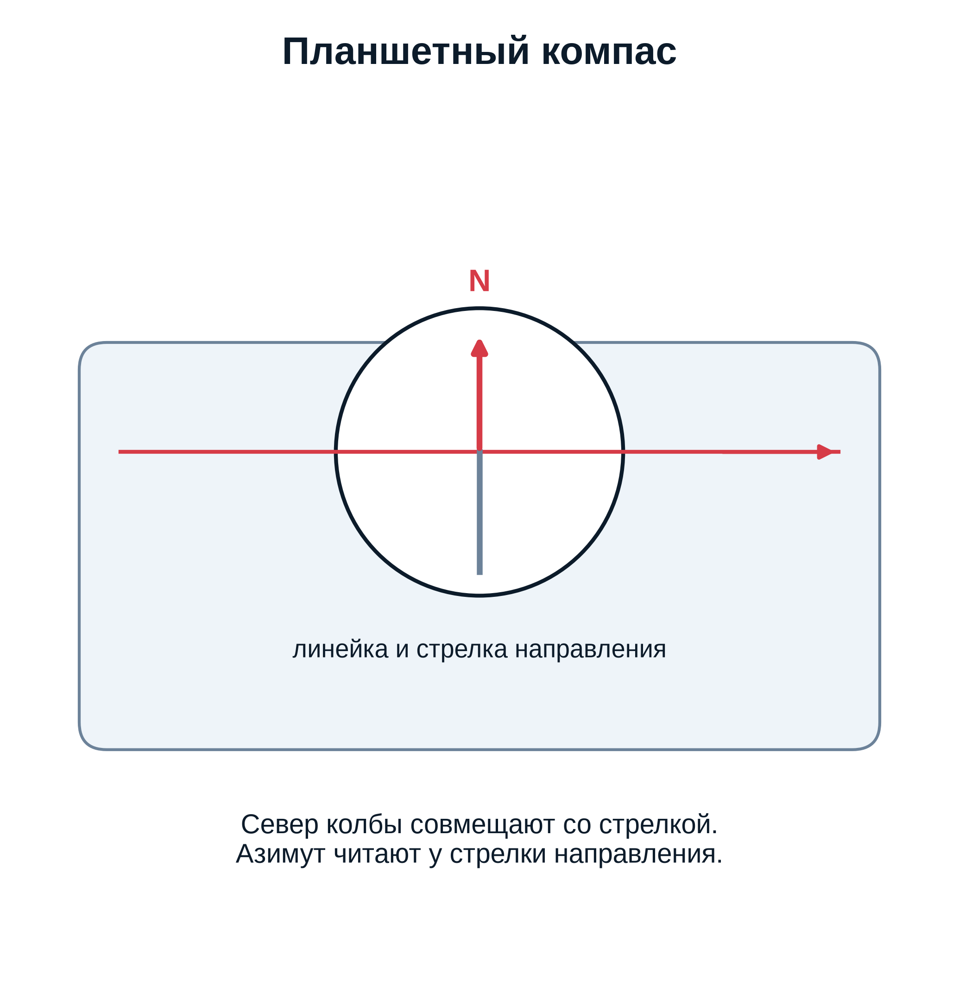
Урок 4.1 Компас: что есть что5.1. Высота и человек 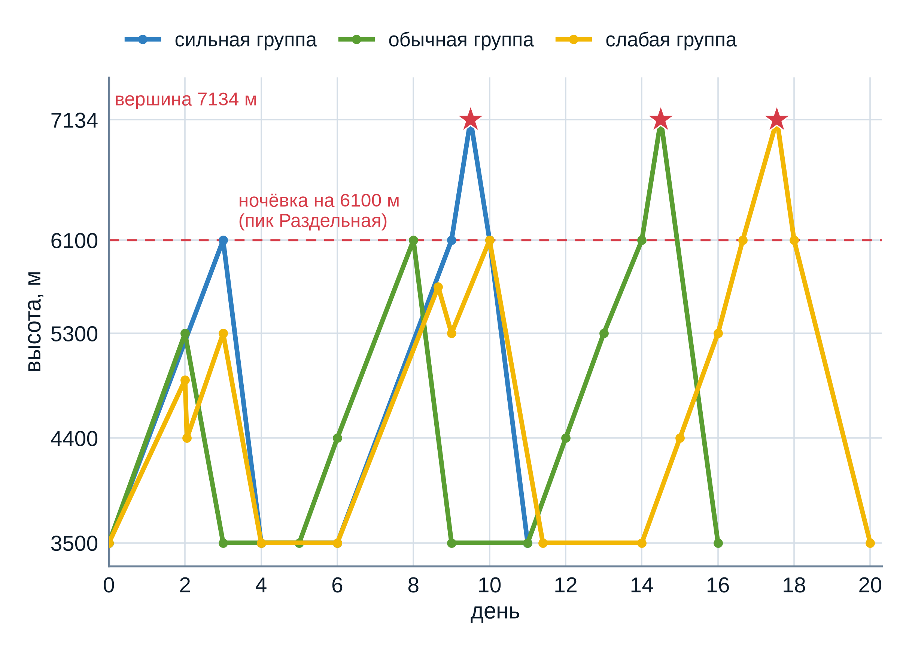
Урок 5.1 Акклиматизация идёт пилой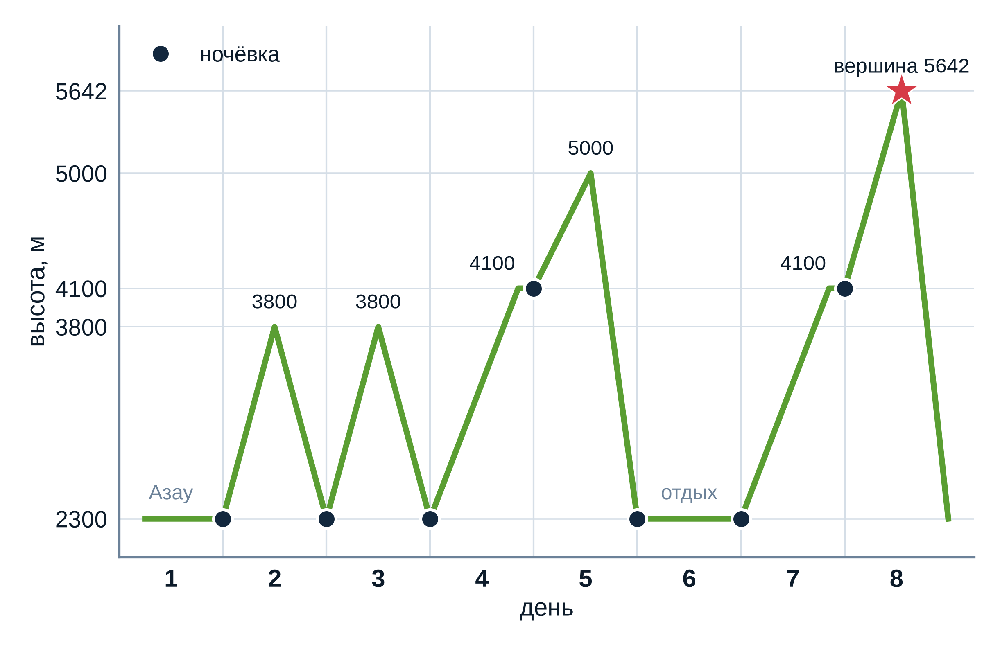
Урок 5.1 Эльбрус: ускоренный график на 8 дней7.4. Перила, спуск и подъём Урок 7.4 Станция спуска: металл, не лента8.2. Точки страховки на скалах 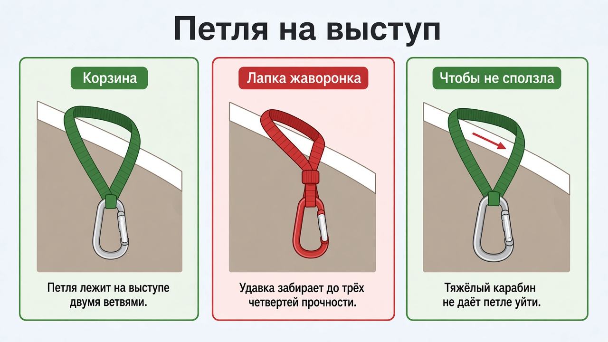
Урок 8.2 Петля на выступеУрок 8.2 Оттяжка между точкой и верёвкойУрок 8.2 Оппозиция закладокУрок 8.2 Френд в щели9.1. Ледоруб и кошки 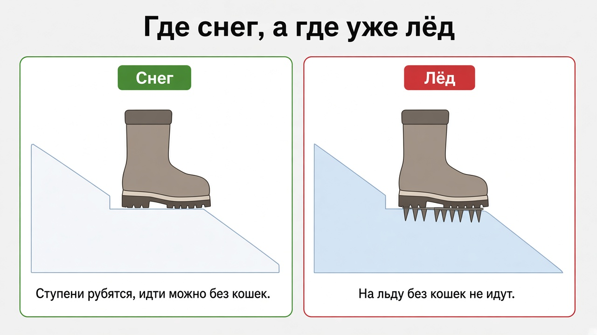
Урок 9.1 Снег, где ещё рубят ступени, и лёд9.2. Страховка на снегу и льду Урок 9.2 Ледоруб в снегу: где стоять и куда класть петлю9.3. Связка на закрытом леднике Урок 9.3 Закрытая трещина: что видно сверху10.1. Как рождается лавина 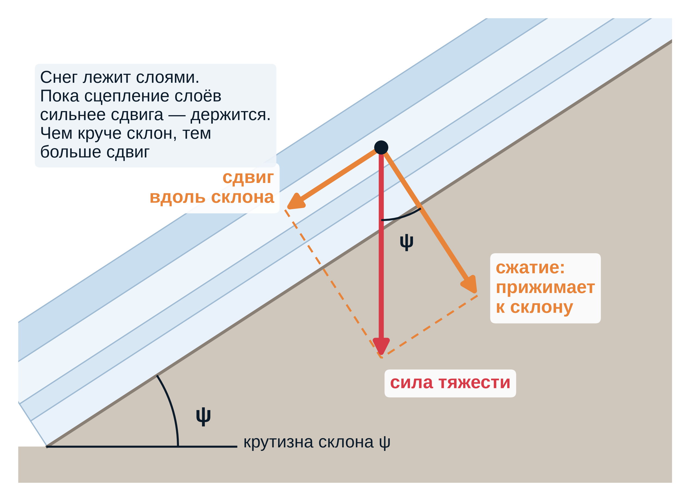
Урок 10.1 Снег держится, пока сцепление сильнее тяжестиУрок 10.1 «Доска» отрывается по слабому слоюУрок 10.1 Два типа лавин: от линии и из точки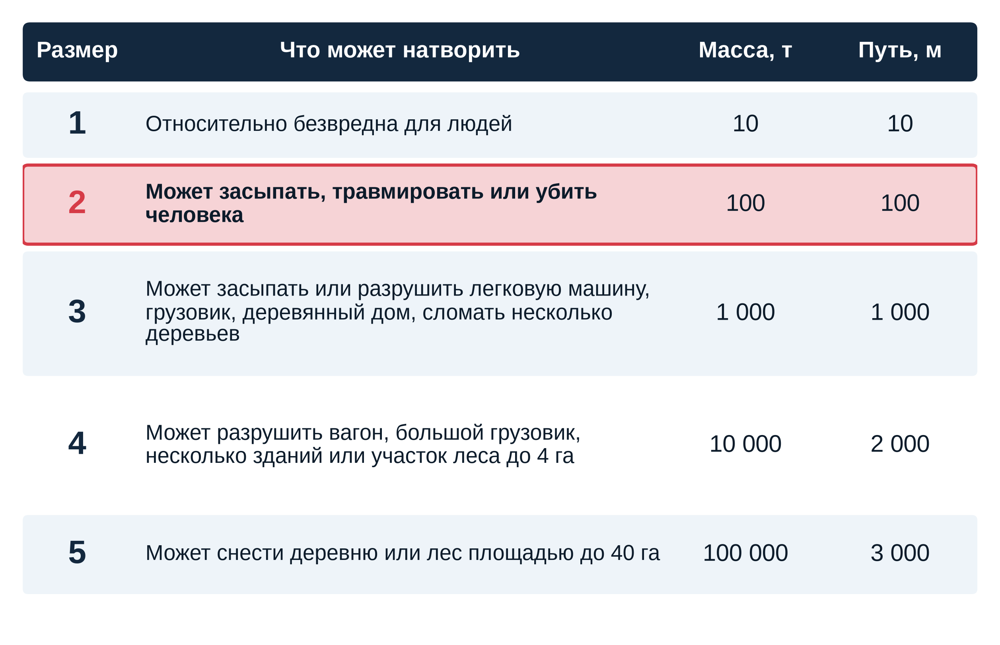
Урок 10.1 Человеку опасен уже второй размер10.2. Погода и рельеф 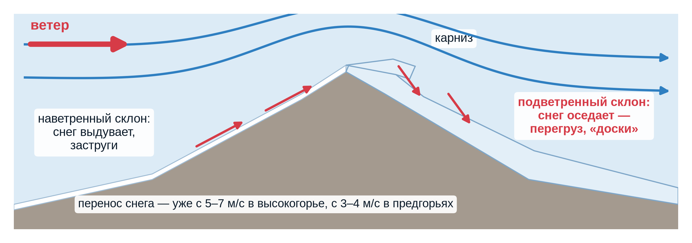
Урок 10.2 Ветер перегружает подветренный склон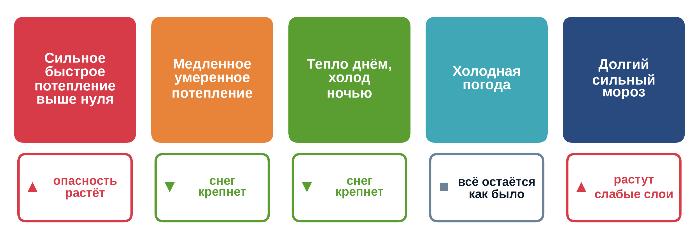
Урок 10.2 Резкое потепление через ноль — опасноУрок 10.2 Зимой опаснее восток и северо-востокУрок 10.2 Чаще всего лавины сходят на 35–40°Урок 10.2 На перегибе снег рвётся первымУрок 10.2 Лес и камни держат снег, гладкий склон — нет10.3. На лавиноопасном маршруте 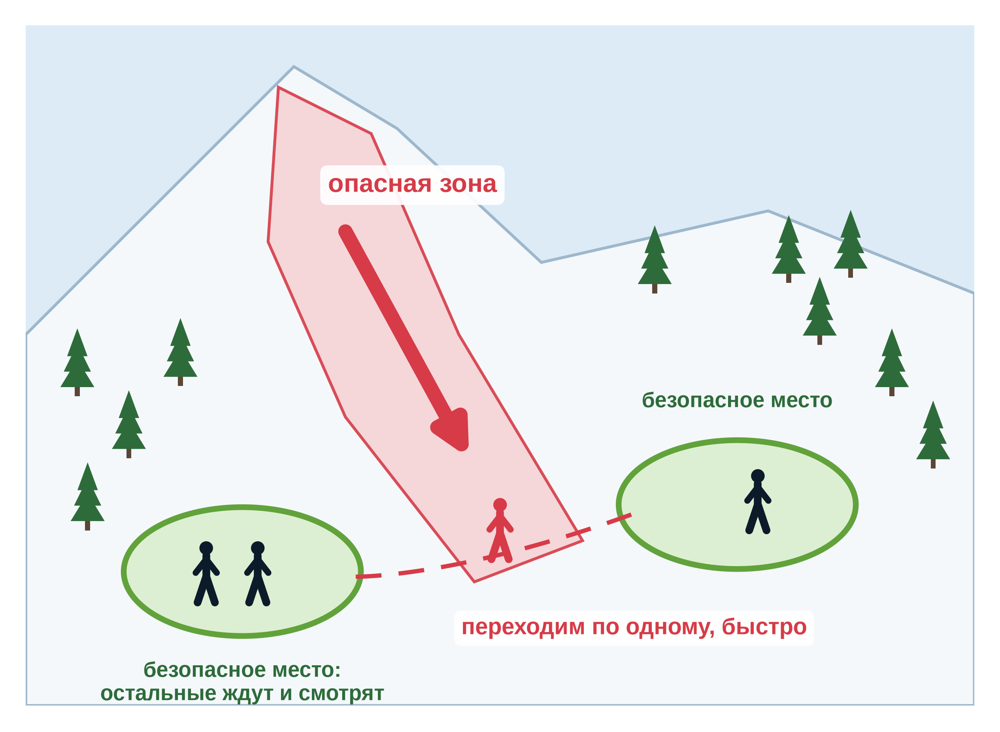
Урок 10.3 Опасное место — по одному, от укрытия к укрытиюУрок 10.3 Датчик, щуп и лопата — у каждогоУрок 10.3 Под снегом счёт идёт на минутыУрок 10.3 Кулуар проходят по борту11.2. Комбинированный рельеф 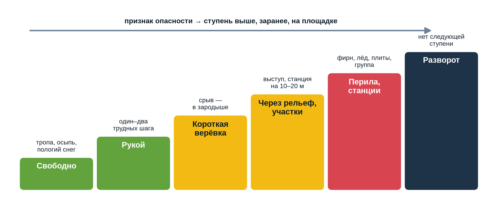
Урок 11.2 Лестница средств страховки11.4. Переправы 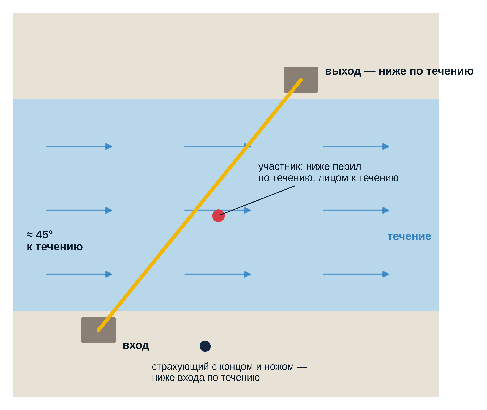
Урок 11.4 Перила по диагоналиУрок 11.4 Где брод мельче12.2. Человеческий фактор 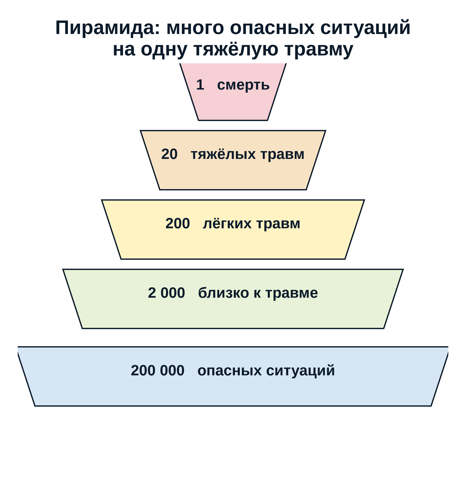
Урок 12.2 Почему нарушают правила15.1. Несчастный случай 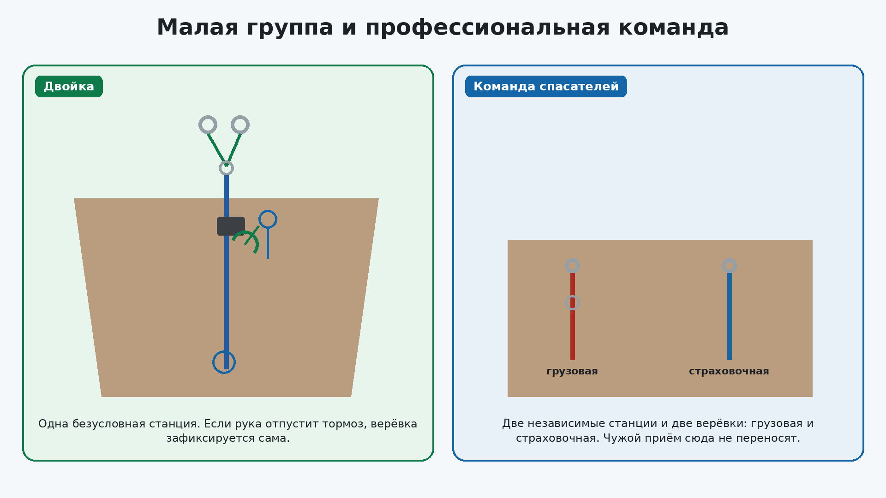
Урок 15.1 Малая группа и профессиональная команда